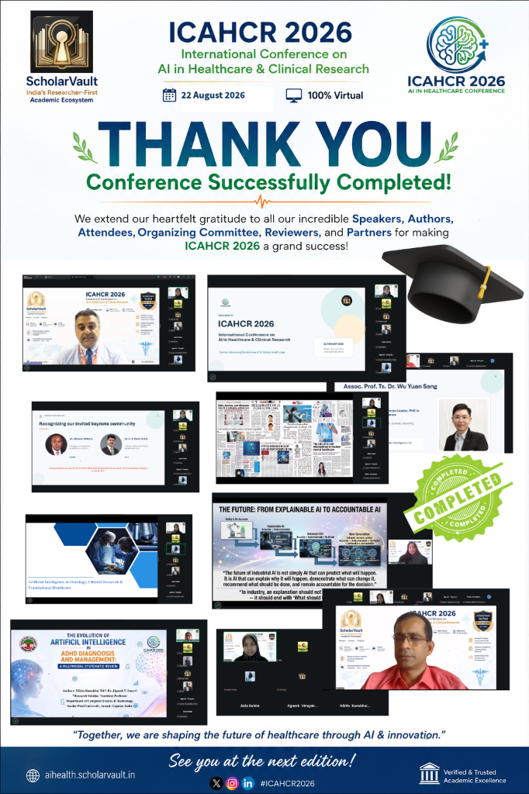

Memories
Conference Moments

22 August 2026 · Virtual · Indian Standard Time

Together, we are shaping the future of healthcare through AI & innovation.
International Speakers
Countries Represented
Sessions Delivered
Hours of Live Programme
The official chronological timeline of events successfully concluded on August 22, 2026.
| Time (IST) | Type | Speaker | Title / Topic |
|---|---|---|---|
| 9:00–9:15 | Inauguration | — | Welcome & Iman Farshchi welcome message |
| 9:15–9:20 | Moderator Intro | Aida Nabila Rahim | PhD Candidate, CEBAR, Universiti Malaya, Malaysia |
| 9:20–9:45 | Keynote | Assoc. Prof. Ts. Dr. Iman Farshchi | "Technology, AI & IoT for Sustainable Healthcare" |
| 9:45–10:15 | Invited Talk | Assoc. Prof. Ts. Dr. Wu Yuan Seng | "Integrating Genomics and AI for Precision Medicine in Oncology" |
| 10:15–10:25 | Break | — | — |
| 10:25–11:00 | Invited Talk | Dr. Sangeetha S. K. B. | "Explainable AI in Industry" |
| 11:00–11:35 | Featured Speaker | Bhabesh Panigrahi, M.S., MBA | "From Molecule to Market: How AI is Reshaping Biopharma Strategy and Commercialization" |
| 11:35–12:15 | Invited Talk | Dr. R. Aiyshwariya Devi | "Next-Generation Artificial Intelligence: Foundations, Generative Models, and Research Innovations in Smart Systems" |
| 12:15–12:45 | Spotlight Research | Nikita Kanubhai Teli (Co-author: Dr. Jignesh V. Smart) | "AI in ADHD" — Sardar Patel University |
| 12:45–1:15 | Featured Speaker | Ramdev Krishnan J | "AI in Oncology, Clinical Research & Translational Healthcare" — Mazumdar Shaw Medical Foundation |
| 1:15–1:40 | Forum | Research Economy & Academic Trust | Moderated discussion |
| 1:40–2:00 | Valedictory | Vote of Thanks & Closing | Special appreciation to Dr. Wu Yuan Seng and Dr. Iman Farshchi |
Recognised during the valedictory session for his keynote contribution and international academic leadership, setting a powerful precedent for cross-border research.
Acknowledged with special appreciation for his exceptional programme support and outstanding invited contribution bridging genomics and AI precision medicine.
PhD Candidate, CEBAR, Universiti Malaya, Malaysia
Our sincere thanks for guiding the academic dialogue smoothly throughout the day and elevating the experience for all virtual attendees worldwide.
As we conclude this virtual edition, we look forward to building a bigger, closer, and hybrid future for AI in Healthcare. Thank you for joining our community of innovators and researchers.
Return to Home